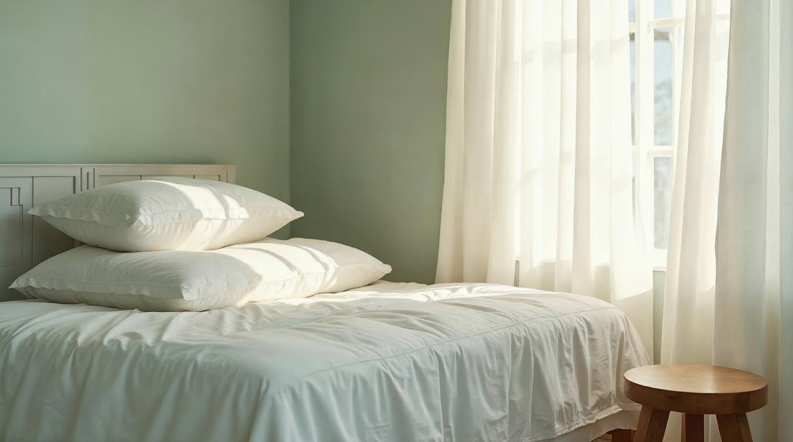
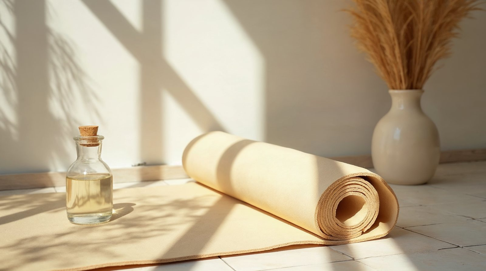
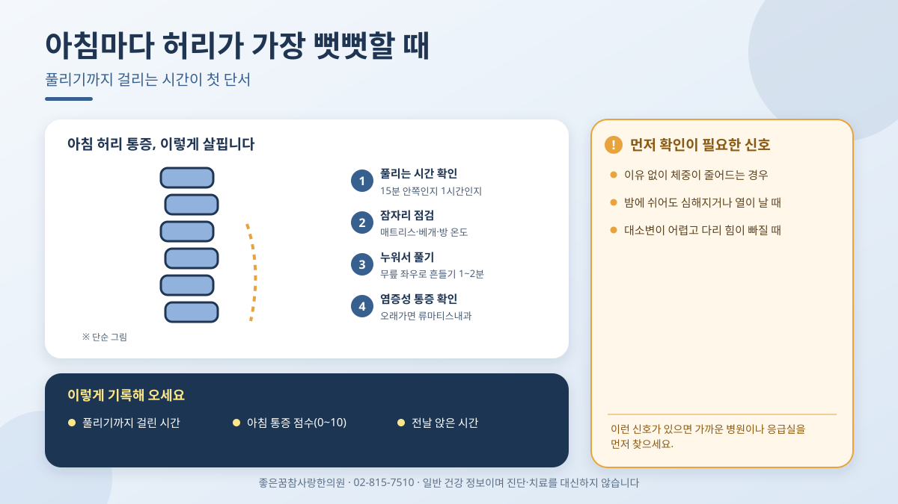

이종호 한의사 감수좋은꿈참사랑한의원 대표원장 (한의사 면허번호 19769)발행 2026-11-26 · 수정 2026-11-26
이 글의 차례
알람이 울리고 몸을 일으키려는 순간, 허리가 통나무처럼 굳어 있습니다. 옆으로 돌아누워 팔로 침대를 짚고 겨우 일어나 앉으면, 첫걸음을 떼기까지 허리를 반쯤 숙인 채 엉거주춤 서 있게 됩니다. 세수할 때 허리를 숙이기가 겁이 납니다.
그런데 이상하게도 출근 준비를 하며 이리저리 움직이다 보면 허리가 조금씩 풀립니다. 점심 무렵에는 아침의 일이 거짓말처럼 느껴지기도 합니다. 그리고 다음 날 아침, 같은 일이 되풀이됩니다.
진료실에서 "아침이 제일 힘들어요"라고 말씀하시는 분이 정말 많습니다. 아침 허리 통증은 대부분 밤새 움직이지 않은 몸이 굳어서 생기지만, 그 안에는 잠자리와 자세, 디스크, 그리고 드물게 염증성 질환까지 여러 이야기가 섞여 있을 수 있습니다.
오늘은 아침에 허리가 유난히 뻣뻣한 이유가 무엇인지, 어떤 경우에 더 자세히 살펴봐야 하는지, 잠자리와 아침 습관에서 무엇을 바꿔 볼 수 있는지 차근차근 정리해 보겠습니다.
아침 허리 통증은 어떤 모습인가요
아침 허리 통증은 자고 일어났을 때 허리가 가장 뻣뻣하고 아프다가, 몸을 움직이면서 점점 풀리는 모습이 흔합니다. 허리를 숙이거나 바로 펴는 동작이 특히 힘들고, 양말을 신거나 세수할 때 불편함을 많이 느끼십니다.
대부분은 일어나서 10~30분 정도 움직이면 한결 나아집니다. 출근길을 걷고 나면 거의 잊어버리는 분도 계십니다. 다만 오후 늦게 다시 피곤해지면서 허리가 묵직해지는 분도 있어서, 하루 전체의 흐름을 함께 살핍니다.
나이와 상관없이 누구에게나 생길 수 있지만, 오래 앉아 일하는 분, 운동량이 적은 분, 잠자리가 바뀐 분, 추운 계절에 더 자주 보입니다.
왜 아침에 허리가 가장 뻣뻣할까요
밤새 몇 시간 동안 거의 움직이지 않으면 허리를 둘러싼 근육과 인대, 관절이 굳습니다. 관절을 매끄럽게 해 주는 관절액도 움직일 때 잘 돌아서, 오래 가만히 있으면 관절이 뻑뻑하게 느껴집니다. 아침에 기름칠이 덜 된 문처럼 삐걱거리는 느낌이 드는 이유입니다.
디스크도 관련이 있습니다. 누워 있는 동안 디스크는 물을 머금어 조금 부풉니다. 그래서 아침에는 디스크 안쪽의 압력이 높고, 이때 허리를 숙이면 부담이 더 커집니다. 디스크가 약해져 있는 분이 아침 세수할 때 허리가 찌릿하다고 하시는 것도 이와 관련이 있습니다.
잠자리와 자세도 큰 몫을 합니다. 너무 푹 꺼지는 매트리스는 허리를 밤새 처지게 하고, 너무 딱딱한 바닥은 엉덩이와 허리를 배기게 합니다. 엎드려 자거나 한쪽으로만 웅크려 자는 자세도 허리를 한 방향으로 오래 비틀어 둡니다.
추운 방도 원인이 됩니다. 새벽에 방 온도가 떨어지면 몸이 움츠러들며 근육이 더 굳습니다. 반대로 전기장판을 너무 뜨겁게 켜고 자면 땀으로 몸이 마르고 뒤척임이 줄어 아침에 뻣뻣하다는 분도 계십니다.
더 자세히 살펴봐야 하는 아침 뻣뻣함
대부분의 아침 허리 통증은 몸이 굳어서 생기지만, 몇 가지 모습이 함께 있다면 염증성 질환을 함께 살핍니다. 강직성 척추염 같은 질환은 젊은 나이에 시작되는 경우가 많고, 아침 뻣뻣함이 유난히 오래갑니다.
- 아침 뻣뻣함이 30분에서 한 시간 넘게 이어지는 경우
- 쉬면 오히려 더 아프고 움직이면 나아지는 경우
- 새벽에 허리 통증으로 깨서 일어나 움직여야 편해지는 경우
- 40세 이전에 서서히 시작되어 석 달 넘게 이어지는 경우
- 발뒤꿈치, 가슴, 다른 관절의 통증이나 눈의 충혈이 함께 있는 경우
이런 모습이 여러 개 겹친다면 류마티스내과에서 혈액 검사와 영상 검사를 받아 보시도록 안내합니다. 일찍 확인할수록 생활을 꾸리는 데 도움이 됩니다. 한의원 진료는 그 확인과 나란히 갈 수 있습니다.
계절과 생활에 따라 달라지는 아침
추워지는 늦가을부터 겨울까지 아침 허리 통증으로 오시는 분이 눈에 띄게 늘어납니다. 새벽 기온이 떨어지면 이불 밖으로 나온 허리와 엉덩이가 식고, 몸이 움츠러들며 근육이 더 단단히 굳기 때문입니다. 잠옷 위에 얇은 배 두르개를 하거나 허리까지 덮는 이불을 쓰시면 도움이 됩니다.
여행이나 명절로 잠자리가 바뀐 뒤에 아침 통증이 시작되는 분도 많습니다. 낯선 베개와 바닥에서 며칠 자고 나면 허리가 한동안 뻣뻣하다는 이야기를 자주 듣습니다. 이럴 때는 집에 돌아와 며칠 잘 자고 나면 가라앉는 경우가 많으니, 잠자리를 다시 정돈하고 아침 풀기 동작을 이어 가 보세요.
전날 저녁의 생활도 아침에 그대로 드러납니다. 늦게까지 술을 마시거나 소파에서 웅크린 채 잠든 날, 하루 종일 의자에 앉아 꼼짝하지 않은 날은 다음 날 아침 허리가 더 무겁게 느껴집니다. 아침 기록과 함께 전날 저녁을 적어 두면 이런 연결이 잘 보입니다.

나이에 따라 다르게 보는 이유
20~30대에 아침 허리 통증이 석 달 넘게 이어지고 점점 길어진다면 염증성 질환을 조금 더 주의 깊게 살핍니다. 이 나이에는 단순히 굳어서 생기는 통증만으로 설명되지 않는 경우가 있기 때문입니다.
중년 이후에는 디스크와 관절이 조금씩 닳으면서 아침에 뻣뻣했다가 움직이면 풀리는 모습이 흔해집니다. 이때는 잠자리와 아침 습관, 낮 동안의 움직임을 다듬는 것이 관리의 중심이 됩니다. 연세가 있는 분이 갑자기 아침 통증이 심해졌다면 뼈의 상태도 함께 확인합니다.
다른 허리 통증과는 어떻게 다를까요
오후나 저녁으로 갈수록 허리가 묵직해지는 분은 하루 동안 쌓인 자세의 부담이 주된 원인인 경우가 많습니다. 아침에는 괜찮다가 오래 앉거나 서 있은 뒤 아파지는 모습입니다. 아침 통증과 저녁 통증이 함께 있는 분도 많습니다.
허리를 삐끗한 뒤 며칠 동안은 아침에 특히 심하게 굳는 경우가 있습니다. 이때는 다친 조직이 회복되는 과정이라 시간이 지나며 가라앉는 흐름을 보입니다. 몇 주가 지나도 아침 통증이 이어진다면 다른 원인을 함께 살핍니다.
아침에 허리와 함께 다리가 저리거나, 허리를 숙일 때 다리로 찌릿함이 뻗친다면 디스크 쪽을 함께 봅니다. 손가락 마디가 아침마다 붓고 뻣뻣하다면 허리보다 관절 전체를 먼저 살펴야 할 수 있습니다.
아침 허리 통증을 두고 자주 헷갈리는 것
첫째, 딱딱한 바닥에서 자야 허리에 좋다는 생각입니다. 너무 딱딱한 잠자리는 허리의 자연스러운 곡선을 받쳐 주지 못해 오히려 배기고 굳을 수 있습니다. 누웠을 때 허리가 뜨지도 처지지도 않는 정도가 좋습니다.
둘째, 아침에 아프니 일어나자마자 허리를 쭉 숙여 풀어야 한다는 생각입니다. 아침에는 디스크 안쪽의 압력이 높아 바로 허리를 깊이 숙이면 부담이 커질 수 있습니다. 누운 채로 가볍게 풀고, 일어난 뒤에는 걸으며 몸을 데운 다음 숙이는 동작을 하시는 편이 좋습니다.
셋째, 움직이면 풀리니 별것 아니라는 생각입니다. 대부분은 그렇지만, 아침 뻣뻣함이 점점 길어지거나 다른 관절 통증이 함께 생긴다면 그냥 넘기지 않고 확인해 보시는 것이 좋습니다.
먼저 이렇게 여쭙니다
처음 오시면 저는 대략 이런 순서로 여쭙니다. 떠오르는 대로 말씀해 주시면 됩니다.
- 아침 뻣뻣함은 일어나서 얼마나 지나면 풀리나요?
- 언제부터 시작되었고, 잠자리가 바뀐 적이 있나요?
- 어떤 매트리스나 바닥에서, 어떤 자세로 주무시나요?
- 새벽에 허리 통증으로 깨신 적이 있나요?
- 다른 관절, 발뒤꿈치, 가슴의 통증이나 눈의 충혈은 없나요?
- 하루에 앉아 있는 시간과 운동량은 어느 정도인가요?
가족 가운데 비슷한 허리 통증이나 관절 질환을 앓으신 분이 있는지도 함께 여쭙니다. 염증성 질환을 살필 때 참고가 되는 정보입니다.

일상에서 먼저 해 볼 수 있는 것
아침 허리 통증은 잠들기 전과 일어나는 순간의 작은 습관으로 꽤 달라질 수 있습니다. 하나씩 골라 해 보세요.
- 바로 누울 때 무릎 아래에, 옆으로 누울 때 무릎 사이에 베개 두기
- 새벽에 방이 너무 춥지 않도록 온도 맞추기
- 전기장판은 너무 뜨겁지 않게, 잠든 뒤 꺼지도록 맞추기
- 엎드려 자는 습관 줄이기
- 일어날 때 옆으로 돌아누운 뒤 팔로 밀며 천천히 일어나기
누운 채로 할 수 있는 아침 풀기 동작도 있습니다. 눈을 뜨면 바로 일어나지 말고, 바로 누워 무릎을 세운 뒤 두 무릎을 좌우로 천천히 흔들어 줍니다. 그다음 한쪽 무릎씩 가슴 쪽으로 가볍게 당겼다 놓습니다. 1~2분이면 충분합니다. 마지막으로 두 팔을 머리 위로 쭉 뻗어 기지개를 켜며 숨을 길게 내쉬면 몸이 깨어나는 것을 느끼실 수 있습니다.
일어난 뒤에는 바로 허리를 숙이는 일보다 집 안을 몇 분 걸으며 몸을 데우는 것을 먼저 하세요. 세수할 때는 한쪽 무릎을 살짝 굽히거나 한 손으로 세면대를 짚어 허리 숙임을 줄입니다. 따뜻한 물로 샤워를 하면 굳은 근육이 한결 빨리 풀립니다.
낮 동안의 움직임도 아침의 허리를 바꿉니다. 하루 종일 앉아 지낸 날은 다음 날 아침 더 뻣뻣하다는 분이 많습니다. 30~40분마다 일어나 잠깐 걷고, 하루 20~30분 걷는 시간을 만들어 보세요.
잠자리를 바꿀 계획이라면 한 번에 비싼 것을 사기보다, 지금 매트리스 위에 토퍼를 깔거나 바닥 요를 한 겹 더 까는 식으로 조금씩 조정해 보며 몸의 반응을 보시길 권합니다.
한의원에서 함께 살필 수 있는 경우
- 아침마다 허리가 굳어 일어나기 힘들다가 움직이면 풀리는 경우
- 잠자리가 바뀐 뒤나 추워진 뒤로 아침 허리 통증이 생긴 경우
- 아침 통증과 함께 오후에도 허리가 묵직한 경우
- 잠이 얕고 자주 뒤척이며 아침이 개운하지 않은 경우
- 몸이 차고 손발이 시리면서 허리가 쉽게 굳는 경우
좋은꿈참사랑한의원에서는 먼저 아래의 '먼저 확인이 필요한' 신호가 없는지부터 봅니다. 그다음 맥을 짚고, 허리와 골반의 움직임, 근육의 긴장, 다른 관절의 상태를 함께 확인합니다. 잠의 질과 몸의 온기도 여쭙습니다.
진찰한 내용에 따라 침 치료, 척추와 골반의 움직임을 보고 세기를 고르는 추나, 필요한 경우 초음파로 위치를 확인하며 놓는 약침 가운데 지금 상태에 맞는 것을 정합니다. 몸이 차고 잠이 얕은 흐름이 함께 있다면 한약을 상의하기도 하며, 이때는 드시는 약을 확인한 뒤 신중하게 정합니다.
염증성 질환이 의심되는 모습이 있다면 류마티스내과 확인을 먼저 안내하고, 진단을 받으셨다면 처방받은 약은 상의 없이 멈추지 마세요. 한의원 진료는 그 치료와 나란히 갑니다.
이렇게 기록해 오시면 상담이 쉬워집니다
아침 허리 통증은 며칠간의 기록으로 흐름이 잘 보입니다. 1~2주 정도 간단히 적어 보세요.
- 잠든 시각과 깬 시각, 밤에 깬 횟수
- 아침 뻣뻣함이 풀리기까지 걸린 시간
- 아침 통증 점수(0~10)
- 전날 앉아 있던 시간과 걸은 시간
- 방 온도나 전기장판 사용 여부
- 다른 관절의 통증이 있었던 날
특히 '풀리기까지 걸린 시간'을 꼭 적어 주세요. 이 시간이 15분 안쪽인지, 한 시간 가까이 이어지는지가 앞으로의 방향을 정하는 데 가장 중요한 단서가 됩니다.
가벼운 아침을 위해
아침의 허리가 하루의 기분을 정하는 경우가 많습니다. 일어나는 순간부터 아프면 하루가 무겁게 시작됩니다. 그 아침을 조금 가볍게 만드는 것은 대개 전날 밤과 일어나는 순간의 작은 습관입니다.
아침 허리가 가벼워지면 출근길 걸음이 달라지고, 걸음이 달라지면 하루의 움직임이 늘어납니다. 늘어난 움직임은 다시 다음 날 아침의 허리를 가볍게 해 줍니다. 그 좋은 흐름의 첫 고리를 오늘 밤에 걸어 보세요.
오늘 밤에는 무릎 아래에 베개 하나를 받쳐 보세요. 그리고 내일 아침, 바로 일어나지 말고 누운 채 무릎을 좌우로 흔드는 1분을 가져 보세요. 다음에 오시면 아침 기록을 함께 펼쳐 보겠습니다.
이런 증상은 먼저 확인이 필요합니다
- 이유 없이 체중이 줄고 밤에 누워 쉬어도 통증이 심해지거나 열이 함께 나는 경우
- 대소변을 보기 어렵거나 참기 힘들고 다리에 힘이 빠지는 경우
이런 신호가 있으면 한의원보다 가까운 병원이나 응급실을 먼저 찾으세요.
함께 읽으면 좋은 글
- 아침마다 허리가 굳고 움직이면 풀리는 강직성 척추염은 어떻게 살피나요?
- 아침에 일어나면 허리가 뻣뻣한 것은 왜 그런가요?
- 허리 디스크 초기 신호와 다리 저림은 어떻게 구분하나요?
- 허리를 뒤로 젖히거나 돌릴 때 아픈 요추 후관절 증후군은 어떻게 살피나요?
- 오래 앉아 공부하거나 일할 때 허리와 골반은 얼마 간격으로 쉬어 주나요?

여쭙는 것
- 아침 뻣뻣함은 일어나서 얼마나 지나면 풀리나요?
- 언제부터 시작되었고, 잠자리가 바뀐 적이 있나요?
- 어떤 매트리스나 바닥에서, 어떤 자세로 주무시나요?
생활에서 해 볼 것
- 바로 누울 때 무릎 아래에, 옆으로 누울 때 무릎 사이에 베개 두기
- 새벽에 방이 너무 춥지 않도록 온도 맞추기
- 전기장판은 너무 뜨겁지 않게, 잠든 뒤 꺼지도록 맞추기
한의원에서 함께 살필 것
- 아침마다 허리가 굳어 일어나기 힘들다가 움직이면 풀리는 경우
- 잠자리가 바뀐 뒤나 추워진 뒤로 아침 허리 통증이 생긴 경우
- 아침 통증과 함께 오후에도 허리가 묵직한 경우
먼저 확인이 필요한 신호
- 이유 없이 체중이 줄고 밤에 누워 쉬어도 통증이 심해지거나 열이 함께 나는 경우
- 대소변을 보기 어렵거나 참기 힘들고 다리에 힘이 빠지는 경우
한눈에 보는 표
| 구분 | 핵심 |
|---|---|
| 여쭙는 것 | 아침 뻣뻣함은 일어나서 얼마나 지나면 풀리나요? 언제부터 시작되었고, 잠자리가 바뀐 적이 있나요? |
| 생활에서 해 볼 것 | 바로 누울 때 무릎 아래에, 옆으로 누울 때 무릎 사이에 베개 두기 새벽에 방이 너무 춥지 않도록 온도 맞추기 |
| 한의원에서 함께 살필 것 | 아침마다 허리가 굳어 일어나기 힘들다가 움직이면 풀리는 경우 잠자리가 바뀐 뒤나 추워진 뒤로 아침 허리 통증이 생긴 경우 |
| 먼저 확인이 필요한 신호 | 이유 없이 체중이 줄고 밤에 누워 쉬어도 통증이 심해지거나 열이 함께 나는 경우 대소변을 보기 어렵거나 참기 힘들고 다리에 힘이 빠지는 경우 |
자주 묻는 질문
아침에만 허리가 아프고 낮에는 괜찮은데 괜찮은 건가요?
대부분은 밤새 움직이지 않아 굳어서 생기는 경우가 많습니다. 다만 뻣뻣함이 30분에서 한 시간 넘게 이어지거나 새벽에 통증으로 깨는 날이 많다면 확인해 보시길 권합니다.
매트리스를 바꾸면 좋아질까요?
너무 푹 꺼지거나 너무 딱딱한 잠자리라면 조정이 도움이 될 수 있습니다. 한 번에 바꾸기보다 토퍼나 요를 더하는 식으로 조금씩 맞춰 보며 몸의 반응을 보시길 권합니다.
아침에 일어나자마자 스트레칭을 해도 되나요?
누운 채로 무릎을 좌우로 흔드는 정도의 가벼운 동작은 괜찮습니다. 일어나자마자 허리를 깊이 숙이는 동작은 부담이 될 수 있어서, 몇 분 걸으며 몸을 데운 뒤 하시는 편이 좋습니다.
강직성 척추염인지 한의원에서 알 수 있나요?
진찰로 염증성 통증이 의심되는 모습이 있는지 살피지만, 진단은 류마티스내과의 혈액 검사와 영상 검사로 하게 됩니다. 의심되면 그 확인을 먼저 안내합니다.
전기장판을 켜고 자도 되나요?
방이 너무 추우면 근육이 더 굳을 수 있어 적당한 온기는 도움이 됩니다. 다만 너무 뜨겁게 오래 켜 두면 몸이 마르고 뒤척임이 줄 수 있으니, 잠든 뒤 꺼지도록 맞춰 보세요.
좋은꿈참사랑한의원은 재진 때 지난번 이야기부터 이어서 여쭙니다. 진료시간과 예약은 오시는 길에서 확인하세요.
어디서 상담받을 수 있나요?
좋은꿈참사랑한의원은 서울 동작구 만양로2길 2 신성빌딩 3층·5층(서울 동작구 상도동, 7호선 상도역 3번 출구 근처)에 있습니다. 한의사 3명(이종호 대표원장, 조영기 수석진료원장, 정원영 진료원장)이 진료합니다. 진료시간은 평일 09:30~20:00(점심 13:00~14:00), 토·일·공휴일 09:30~15:00이며, 방문 전 전화로 확인을 권합니다. 예약은 네이버 예약, 카카오톡 상담, 전화 02-815-7510로 받습니다.
이 글은 일반적인 건강 정보이며 개인의 진단이나 치료를 대신하지 않습니다. 증상이 있거나 복용 중인 약이 있다면 진료를 통해 확인하세요. 치료 효과는 개인마다 다를 수 있습니다.
작성 기준: 일반적으로 알려져 있는 건강 정보를 참고해 정리했습니다(대표원장 감수). 증상 기록은 1~2주 동안 하루 1회, 비슷한 시간에 적어 오시면 지난 상태와 비교하기 쉽습니다.